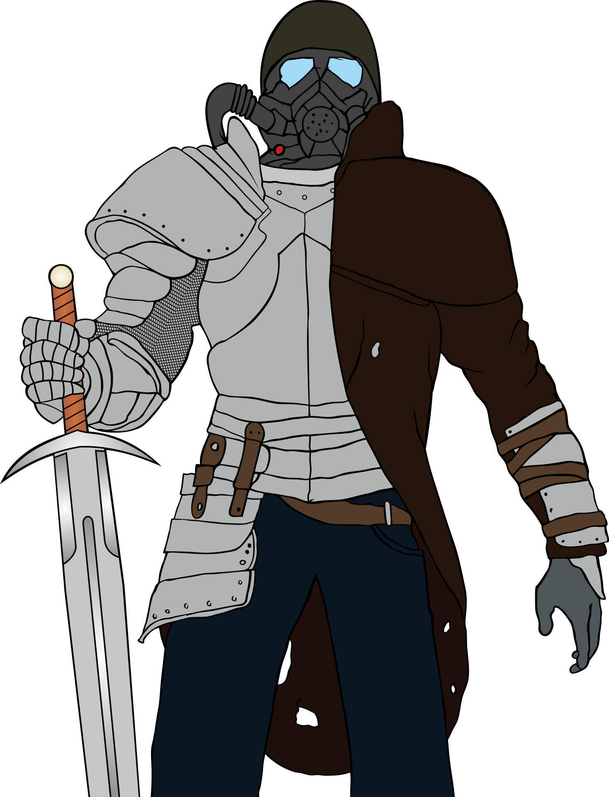

About
Welcome fellow game enthusiasts to this site! This informative site aims to give you a short overview of the Generic Universal Role-Playing System, better known as GURPS, and help decide if this is a game system for you before you commit to it.
Our goal is to help you if you are new players get into the tabletop role-playing game (TTRPG) hobby or if you have been in the hobby for a while and are looking to try out new game systems. The content of this page focuses on informing you on how to play GURPS 4th edition, but most principles apply to the older editions as well.
And finally, if you decide to give it a try at playing GURPS, this site points to helpful online resources to help you start your first game.
What is GURPS?
GURPS is a generic role-playing system created by Steve Jackson Games to help people play any game setting. This system uses the point buy mechanic to help players and game master (GM) build their characters to fit the concept and setting that the gaming group wants to play.
Unlike class-based and leveling systems like Dungeons & Dragons, which have a set character path based on the class you chose (wizard, for example), GURPS serves as a toolbox from which the players pick various players' traits approved by the GM and purchase them with character points.

This system is also setting agnostic, making it easy to implement it to any game style and setting you and your group want to play in. For example, you want to play a space opera fighting an evil crime syndicate that wants to overthrow the Galactic Federation. Few weeks after that game, you can switch to play classic medieval fantasy dungeon crawls, thanks to the flexibility of this system.
Why GURPS?
GURPS is a generic roleplaying system that is independent of setting and style of play. Some settings focus more on combat, like Dungeons and Dragons. Others implement storytelling systems like World of Darkness games. Most systems have mechanics tied to a specific setting (e.g., medieval fantasy, modern setting, space exploration).
Most systems have either a light abstract mechanic or crunchy mechanics that promote a lot of optimizations on the player side. There is nothing wrong with either of these approaches, but for beginner players who are unsure how they want to play their game or game masters who want to implement a cool new thing in the game without thinking will this make a game unplayable this can represent a problem. GURPS presents to players both options. In our experience, it is easy to transition from one style of play into the other if the group wants to change the way they play the current game. Low action economy in both the mechanics heavy and light version allows for a fast-paced game with low waiting time between player turns.
Finally, play the game that you want! With this system, the game can focus on the combat-heavy game and a skill-based game that may not have any combat at all but instead focuses on investigation, exploration, intrigue, and/or player-focused worldbuilding.